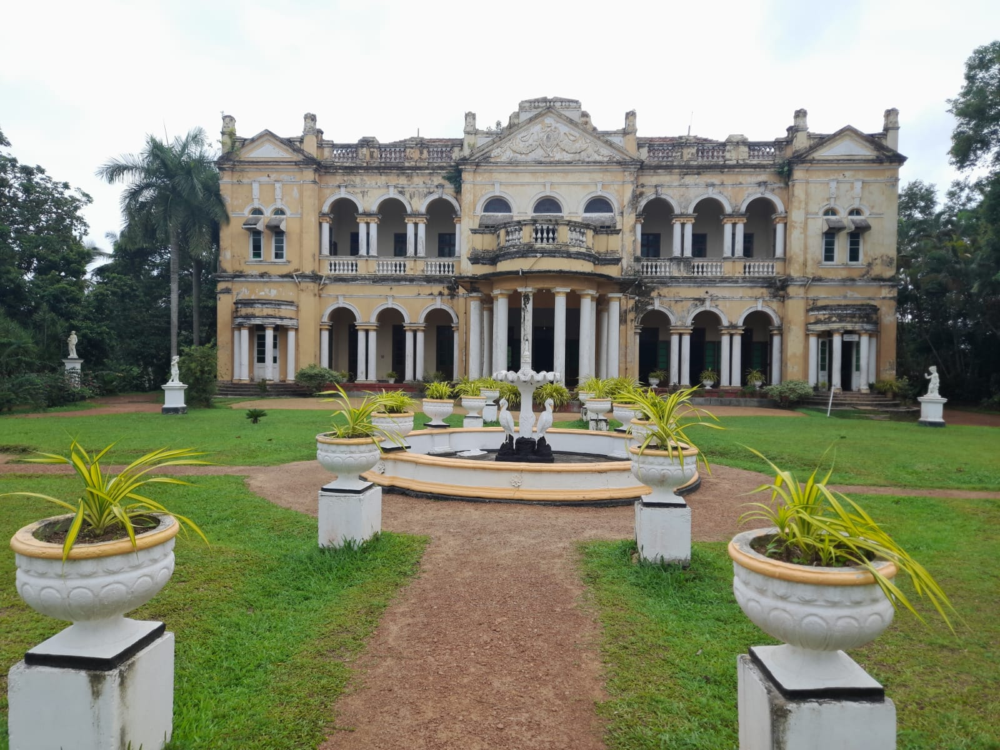

Image credit: [Everything Lanka]
Richmond Castle is a stunning embodiment of perfect architecture in Sri Lanka. This castle is found in the south province of Sri Lanka and has an amazing back story
Top Attractions
- Beautiful and unique architecture of the castle
- Historical and valuable furniture and interior design of past Sri Lanka.
- Sad but astonishing story behind the construction of the castle
- Gorgeous flower garden and front yard.
How to Get There
- Located in **Badulla District**, Sri Lanka.
- Accessible via the **famous train ride** from Kandy or Colombo.
- Private vehicles and **tuk-tuks** are available for local transport.
Best Time to Visit
Visit Richmond Castle**between May and July** for minimum foot traffic and local visitors.
Interesting Facts
- The castle is considered as a mansion(Walauwa) in Sri Lanka. Its architectural style is Edwardian.
- A boys only orphange is being operated in the property in the honor of the owner*see back story*.
- Local legend ties **Ravana Falls** to the ancient Indian epic, **Ramayana**.
With its **hiking trails, cultural sites, and relaxing atmosphere**, Ella is a must-visit for nature lovers and adventure seekers alike.